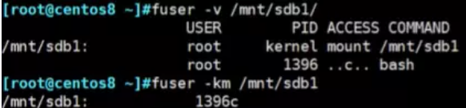
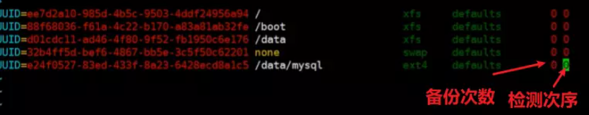
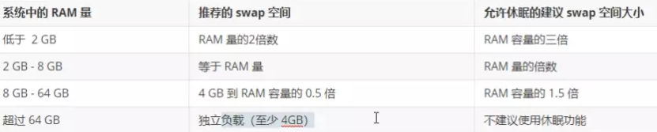

挂载和swap空间管理
🎍11.5 挂载管理和swap空间管理
🎋挂载管理
概念解析：
分区VS挂载（11.5-09：00）
详解：浅谈Linux分区和挂载（点） - TFLS-DJL - 博客园 (cnblogs.com)
挂载：设备和某文件夹建立关系，Linux系统中一切皆文件，文件的源头在”/“
重点：设备和文件夹的关系？ 一对多
挂载规则：
1 | |
how 如何挂载？
详解：Linux 挂载管理(mount) - pursuer.chen - 博客园 (cnblogs.com)
how查看挂载
1 | |

how剔除挂载
1 | |

🎍永久挂载——写配置文件（11.5-28：00）
1 | |

how如何修复
1 | |
🎋swap 文件系统
swap作用：缓解内存紧张的特殊情况，硬盘模拟内存，将内存导入swpa分区，起到临时扩大内存的作用。
swap缺点 ：减缓系统运行速度（k8s会禁用）

how：swap如何实现？
1. 创建交换分区或者文件
2. 使用mkswap写入特殊签名
3. 在/etc/fstab文件中添加适当的条目
4. 使用swapon-a激活交换空间
查询swap
free -h //查看swap
创建swap
mkswap /dev/sdc1
更新swap
`swapon -a ``
``swapon -s //查看 `
K8s禁用swap（补）
swapoff -a
🎋实战：文件如何转化为swap(11.5-59：00)
1 | |
how如何移除swap
1 | |
本博客所有文章除特别声明外，均采用 CC BY-SA 4.0 协议 ，转载请注明出处！